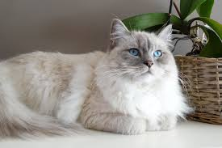
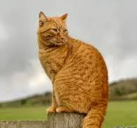
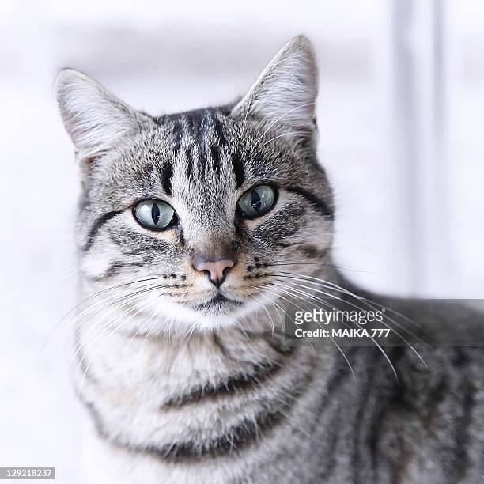
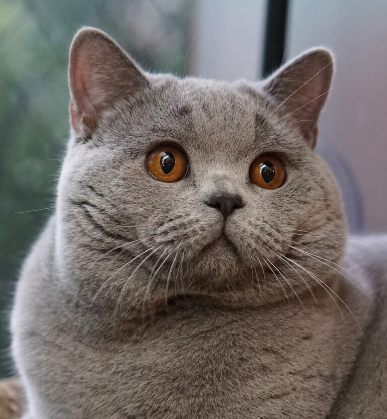

Adopting a Ragdoll cat means bringing home a gentle, affectionate companion who loves to cuddle. Known for their calm and docile temperament, Ragdolls are ideal for families and individuals seeking a loving pet. They often follow their owners around and enjoy being involved in daily activities. With their striking blue eyes and silky, plush coats, they are as beautiful as they are sweet-natured. Ragdolls adapt well to indoor living and are great with children and other pets. By adopting a Ragdoll, you gain a loyal, easygoing friend who will fill your home with warmth and companionship.
RagDoll->
Adopting a Ginger cat means adding a playful, affectionate, and friendly companion to your home. These cats are known for their outgoing and adventurous personalities, often forming strong bonds with their families. Their striking orange coats and charming demeanor make them stand out. Ginger cats are generally low-maintenance and adapt well to various living environments. They're great with children and enjoy interactive playtime, making them perfect for families or active owners. By adopting a Ginger cat, you'll provide a loving home to a lively, loving pet who will brighten your days with their cheerful energy.
Ginger (Orange Tabby) ->
Adopting a Gray Tabby cat offers an intelligent, affectionate, and adaptable companion. Known for their beautiful coats with stripes, spots, or swirls, these cats are as charming as they are easygoing. Gray Tabbies form strong bonds with their owners and enjoy being involved in daily life. They are playful but also appreciate downtime, making them a great fit for families, singles, or seniors. Their versatility allows them to thrive in a variety of homes. By adopting a Gray Tabby, you're bringing home a devoted friend who will fill your life with love and companionship.
Gray Tabby ->
Adopting a British Shorthair brings a loyal, independent, and affectionate companion into your life. These cats are known for their calm and quiet nature, making them perfect for a relaxed household. Their dense, plush coats and round faces add to their irresistible charm. British Shorthairs are adaptable and thrive as indoor cats, bonding deeply with their families while maintaining their independence. They are excellent with children and other pets, making them a great choice for families. By adopting a British Shorthair, you gain a loving and elegant pet who will bring joy and serenity to your home.
British Short Hair ->